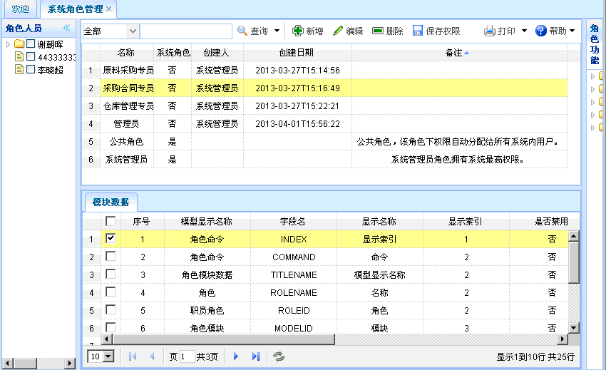
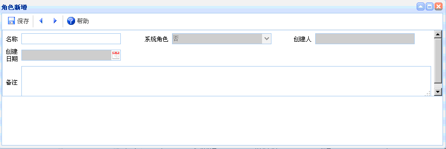
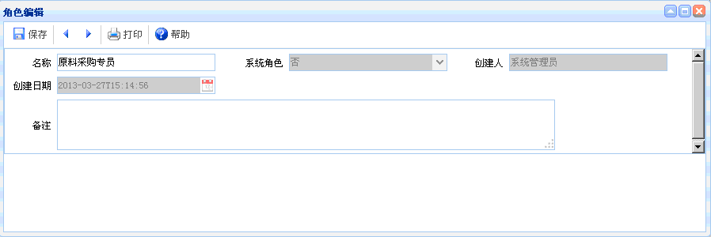

系统角色管理
系统角色管理
功能介绍：点击【系统角色管理】，进入系统角色管理页面，点击右侧角色功能的某项功能即可显示相应的模块数据。不同的登陆人登陆后显示的是与其平级的权限信息。如下图所示。功能主要包括：查询、新增、编辑、删除、保存权限。

图表1-xt3-1【系统角色管理】
图表1-xt3-1【系统角色管理】
【查询】：通过设置查询条件，查询出符合条件的系统角色管理信息，直接点击查询按钮即可列出相关的系统角色管理信息。
【新增】：点击新增按钮，如下图所示。新增完毕，点击保存。其中灰色文本框为默认。

图表1-xt3-2【角色新增】
图表1-xt3-2【角色新增】
【编辑】：选中某项系统角色管理信息，点击编辑按钮后，出现如下图所示内容。编辑完毕，点击保存。其中灰色文本框为默认，有搜索图案的要进行查询。

图表1-xt3-3【角色编辑】
图表1-xt3-3【角色编辑】
【删除】：选中某项系统角色管理信息后，点击删除，即可删除该系统角色信息。
【保存权限】：选择某项系统角色管理信息后，在右侧选择该角色的角色功能，点击保存权限，即可保存该角色的相关权限。
 常见问题
常见问题
1、？
2、？
3、？